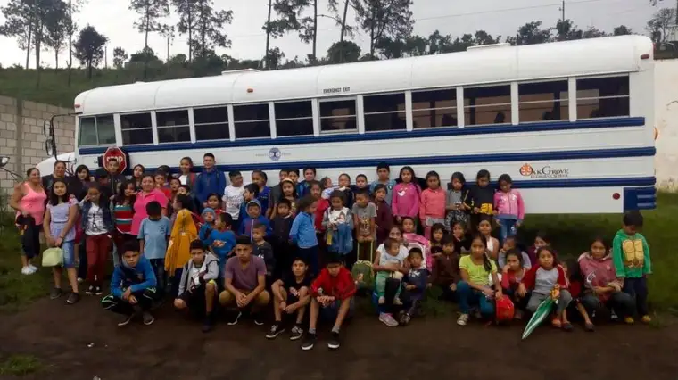
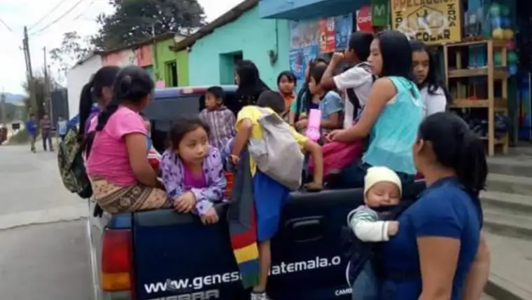
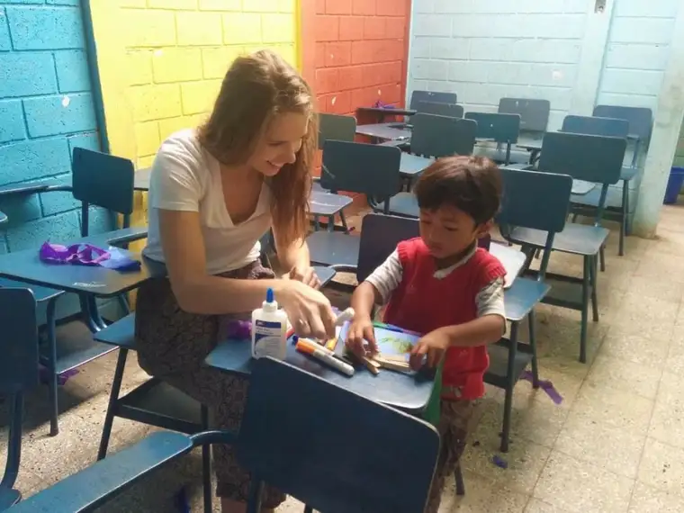

FARGO — For almost a year, the group of 17 Oak Grove School students and nine adults had been excitedly preparing for their mission trip to Antigua and Chimaltenango, Guatemala.
The journey looked to be one of the schools’ best missions yet, says Bob Noel, mission trip director, given the students’ genuine hearts for service. “We just felt like God was going to do profound things.”

Reaching the Dallas airport June 3 ahead of schedule, the group giddily anticipated the days ahead, especially meeting children at Luz de Maria orphanage and Project Genesis school, two endeavors with which the school has formed a close relationship.
A special event had been planned upon landing — a “reveal” of the bus Oak Grove students had funded for Project Genesis from “penny wars” and other fundraising efforts, for safer transportation of children through the crime-ridden region.

But shortly before boarding time, phones began lighting up with notifications of a canceled flight.
They’d soon learn Volcano Fuego — just 20 miles from where they were to gather — had erupted, and that the worst volcanic eruption in the country since the 1970s was spewing harmful ash everywhere.
“It seemed like they’d all gotten punched in the gut, or had the air taken out of them,” Noel recounts of the students’ initial reaction. Many began searching their phones for any related news, and as headlines appeared, reality set in.
“There were tears, but I was so impressed with how quickly all the students got over it, and how proactive they were,” Noel says. “I was amazed at their adaptability.”
Michelle McKay, parent traveler, says despite disappointment, the adults began to quickly feel gratitude they hadn’t already been on the ground in Guatemala.
“You’re trying to do God’s will and walk alongside these people. There was a lot of, ‘Why?'” she says. “But you just have to rely on faith that there was a reason we weren’t down there.”
“Mr. Noel reminded us that there was a team of people praying for us back home,” adds Ian, her son. “Because of that, we knew it must have been divine intervention.”
Two of the older student travelers, on a different route with plans to meet the rest of the team later, had been there before on separate missions, and looked forward to experiencing Guatemala together.
Carly Benusa, a 2017 graduate, says after the initial shock and “moment of selfishness,” she thought of her friends on the ground. “It’s a moment of transcending yourself and thinking of others who have lost absolutely everything.”
A call to action soon followed. “We realized, we can’t go and serve there,” she says, “but we can serve where we’re at. We were motivated to do what we could.”
The young missionaries began plotting a car-wash fundraiser with games to take place soon after their return. The community event ultimately brought in nearly $5,000 to benefit those harmed by the volcano.
“Fulfillment isn’t about what I can do for me, but for others,” Benusa says, “like seeing the power of education and how it’s changing these kids’ lives.”

Her friend Mari Aaker, also a 2017 graduate, had hoped to do some photography in Guatemala to share visual stories with others.
Though the group learned that none of their friends had been harmed, dozens were reported killed, and Noel says numbers could reach beyond 400, given the presence of squatter villages at the base of the volcano.
“It’s devastating how many people’s lives have been turned around by this event,” Akers says.
With Noel and Benusa, she’s committed to helping Project Genesis achieve official nonprofit status, so that more can learn about the school and offer aid.
“The people in Guatemala are so welcoming, and they’re valuable members of our world,” Akers says. “We need to do something and not just leave them behind in this tragedy.”
Most of the students have begun planning to return as soon as possible. Alison Jacobson, a senior, has every intention of being on that next flight out.
“I can’t explain how important it is to me,” she says. “Serving others and fulfilling God’s word makes me happy and leaves a bigger impact than anything else I could do. But ultimately, having (the first trip) denied due to Volcano Fuego erupting, it made me want to go even more.”
Though some adults told her it might not be as beautiful with the ash covering the landscape, she says, “I realized, I don’t even care if it’s covered in ash, or burned. I wasn’t going to see that. I was going there to help, and the fact that now it is in ruins, I still want to go help, and that has shown me that my heart is in the right spot.”
Noel won’t be on any future mission trips with the school, having recently accepted a new job, but says he’ll remain connected through his position as formator of discipleship with the Diocese of Crookston.
And despite the letdown of what was to be his final trip with Oak Grove, he says, God still worked something special.
“Obviously, this wasn’t intended to be a trip, but a little bit different experience,” he says, noting that it’s a story of two different people coming together, and God narrating. “We’re still participating in each other’s stories and learning from each other.”
[For the sake of having a repository for my newspaper columns and articles, I reprint them here, with permission, a week after their run date. The preceding ran in The Forum newspaper on July 14, 2018.]